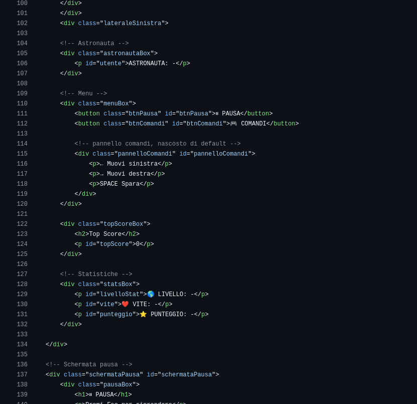
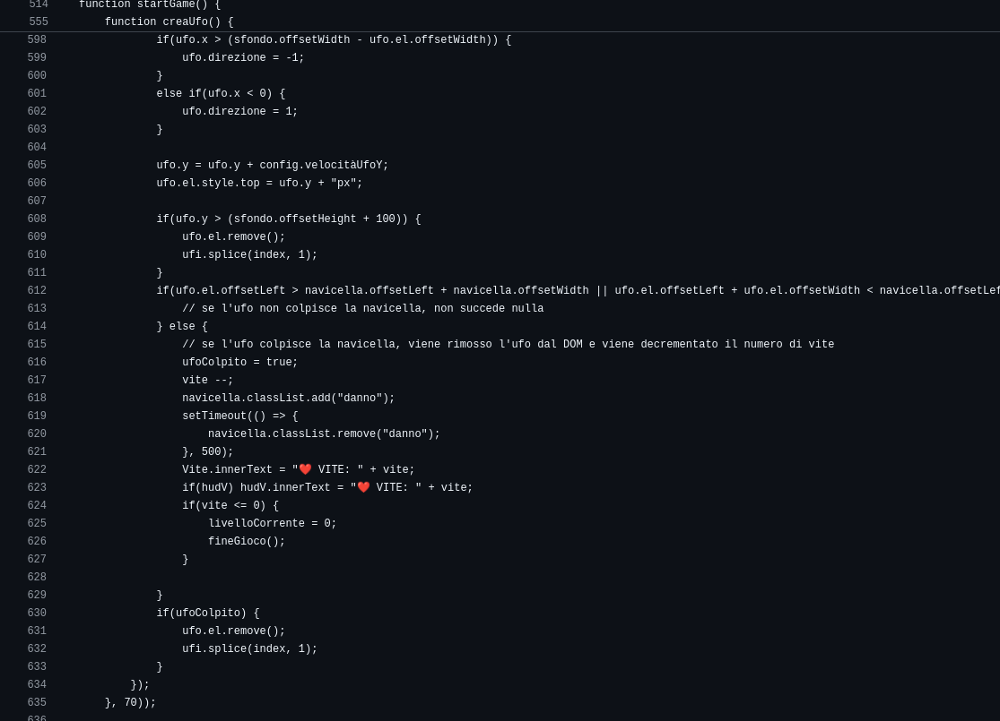
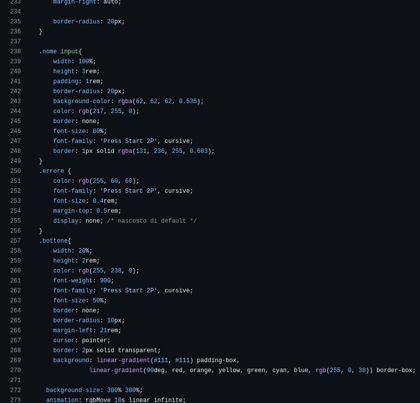

04 -IL GIOCO

SPACE WAR
Prova il gioco!
Un gioco 2D sul browser sviluppato con HTML, CSS e JavaScript.
Astronavi, asteroidi, ufo e tanto codice scritto da zero.
HTML
CSS
JavaScript
Game Loop
Space War è un gioco 2D sviluppato interamente con HTML, CSS e JavaScript. Il gioco è ambientato nello spazio ed ha un look retrò e arcade come i vecchi giochi. Coinvolge astronavi, asteroidi e ufo in una guerra interstellare attraverso tutti i pianeti del sistema solare, con l'obiettivo di sopravvivere sconfiggendo ufo ed evitando gli asteroidi per ritornare al pianeta terra.
Il progetto è nato come parte del mio percorso scolastico dato che a scuola con la materia Sistemi e Reti abbiamo cominciato a studiare le basi di HTML, CSS e JavaScript, con l'obiettivo di creare un gioco interattivo utilizzando le mie competenze in queste tecnologie. Ho deciso di sviluppare un gioco spaziale perché creare qualcosa di divertente e coinvolgente.
Il progetto è stato sviluppato utilizzando HTML per la struttura del gioco, CSS per lo stile e l'animazione, e JavaScript per la logica di gioco e l'interattività. Ho scritto tutto il codice da zero, senza utilizzare framework o librerie esterne, per avere un controllo completo su ogni aspetto del gioco.
Durante lo sviluppo del gioco ho affrontato diverse sfide, tra cui la gestione della logica di gioco, la creazione di animazioni fluide e l'ottimizzazione delle prestazioni. Ho dovuto imparare a gestire le collisioni tra oggetti, implementare un sistema di punteggio e creare un'interfaccia utente intuitiva. Queste sfide mi hanno permesso di migliorare le mie competenze in JavaScript e di comprendere meglio come funzionano i giochi interattivi.
La struttura del gioco, le scritte e la maggior parte delle scritte dell'UI sono state create utilizzando HTML. Ho utilizzato classi e ID per identificare gli elementi del gioco e per applicare stili specifici facendo attenzione a avendo cura di non dimenticare nulla per rendere l'esperienza utente piacevole.

La logica di gioco è implementata principalmente in JavaScript. Il gioco appunto nasce come una sfida per mettere in pratica le prime conoscenze acquisite durante l'anno scolastico, che poi ho approfondito a casa e mi ha permesso di sviluppare questo primo gioco. Tutti i movimenti (ufo, asteroidi, razzi ecc..) e le collisioni sono gestite attraverso righe di codice JavaScript.

Per rendere il gioco più coinvolgente, ho utilizzato CSS per creare alcune animazioni fluide e effetti visivi. Ho anche utilizzato effetti di luce e ombra per dare al gioco un aspetto più dinamico e accattivante e ho giocato molto per rendere l'interfaccia utente piacevole ed intuitiva, con un design che richiama i vecchi cabinati arcade dei giochi del passato, dando anche al gioco stesso uno stile retrò e pixelato.

Il progetto Space War è stato un'esperienza estremamente gratificante e formativa. Mi ha permesso di mettere in pratica le competenze acquisite durante l'anno scolastico e di sviluppare un gioco interattivo da zero. Ho imparato molto sulla programmazione, la logica di gioco e il design dell'interfaccia utente. Sono orgoglioso del risultato finale e sono entusiasta di continuare a migliorare le mie competenze e a creare nuovi progetti in futuro. la sfida più grande è stata sicuramente gestire la logica del gioco, le collisionni e capire come il browser lavora e interpreta il codice, ma alla fine sono riuscito a superare tutte le difficoltà e a creare un gioco funzionante e divertente. Questo progetto mi ha anche insegnato l'importanza della pazienza e della perseveranza quando si affrontano sfide complesse, e mi ha motivato a continuare a imparare e a migliorare le mie competenze in programmazione e sviluppo web.
Prova il gioco!